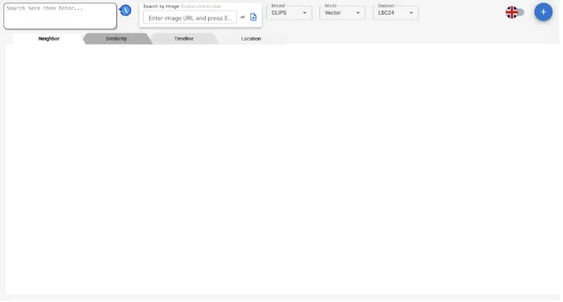

SnapSeek.
Oppgaven: I MIX204 ved Universitetet i Bergen fikk vi i oppgave å evaluere og forbedre SnapSeek, et søkeverktøy som brukes til å finne bestemte bilder blant store mengder fotografier fra hverdagen. Systemet var opprinnelig utviklet for erfarne brukere. Gjennom intervjuer og brukertester oppdaget vi at nybegynnere hadde problemer med å forstå søkefunksjonene, bruke filtre og finne fram til riktige bilder. Oppgaven vår ble derfor å gjøre systemet enklere og mer intuitivt for nye brukere.
Løsningen: Vi redesignet SnapSeek med et mer oversiktlig grensesnitt, tydeligere filtre og KI-støttet søk som automatisk foreslår relevante filtre ut fra det brukeren skriver. Vi la også til søkehistorikk og en forbedret bildeoversikt. I den første brukertesten av redesignet klarte begge deltakerne å finne riktig bilde i begge oppgavene. Etter ytterligere forbedringer viste den neste testrunden at nye brukere løste oppgavene raskere og med mindre usikkerhet. De brukte også filtrene mer aktivt og syntes systemet var enklere å forstå.
Før og etter redesignet
Under ser du hvordan SnapSeek så ut før vi startet, og hvordan vi gjorde søk, filtrering og navigasjon enklere for nye brukere.
